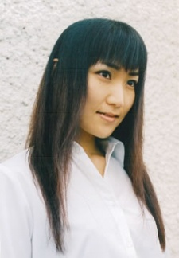
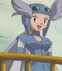

|  |
Kumiko Yokote is a Japanese voice actress and singer. She works under the alias Hyo-sei for Power Rise. She voices Eru from Shugo Chara! series.
|
|---|
|  | Winona | Pokemon Advanced Generations | Winona is the gym leader of Fortree city in the Hoenn region. Winona has respect for the sky so much, she prays to it before her battles. She values teamwork between Pokemon and their trainers. |